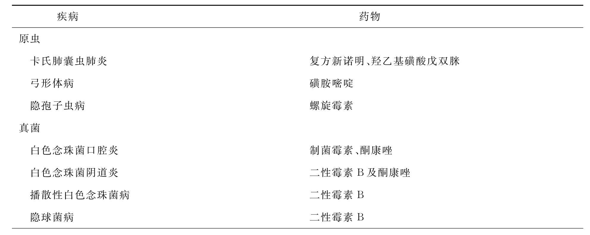
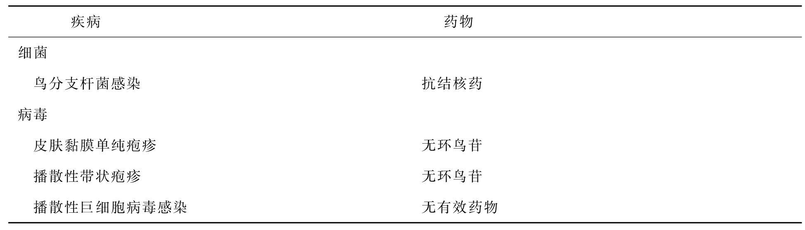

艾滋病是获得性免疫缺陷综合征（Acquired immunodeficiency syndrome，AIDS）英文名称缩写的音译名。1981年首先在美国报道，1982年正式命名。近年来，世界各地发病率有上升趋势，主要经性接触、血液和母婴传播。
1986年国际病毒分类委员会将艾滋病的病原体正式命名为人类免疫缺陷病毒（Human Immunodeficiency Virus，HIV）。HIV系逆转录RNA病毒，细胞膜芽生。未成熟病毒颗粒有一新月状的核，成熟的病毒颗粒有一致密偏心的圆形或棒状的核，颗粒直径100～140nm。病毒蛋白包括：核蛋白、膜蛋白和与复制有关的酶蛋白。HIV具有典型的逆转录病毒的基因结构，两边是重复调节序列，中间有3个主要基因：①gag基因，编码三种核蛋白；②pol基因，编码多聚酶和蛋白酶；③env基因，编码膜蛋白。
HIV由皮肤或黏膜破口进入血液，主要攻击和破坏辅助性T细胞（T4 ）。HIV对T4 有较强亲和力，进入T4 使之破裂、溶解、消失，从而使机体T4 数目减少，呈现免疫抑制状态。因此，易于发生条件致病性感染和Kaposi肉瘤。同时，病毒具有嗜神经性，能侵犯神经系统，感染脑和脊髓，引起神经系统症状。
1978年在美国纽约发现第1例病例以后，1979年发现7例，1980年12例，1981年204例，1982年750例，到1983年已累计发生1739例，呈逐年直线上升，世界卫生组织宣布到1992年7月底统计已达164个国家。1995年6月30日，世界卫生组织公布，全世界登记在册的艾滋病病例已接近117万，但实际人数要比此数高得多，估计全世界AIDS病例总数可能已超过500万，全世界目前HIV感染者的总数已超过2000万人，每天增加约600人。死亡患者数近100万人，故称之为世纪绝症。目前以美洲为最多，其次是亚洲，欧洲名列第三。近十年来，亚洲HIV感染人数正飞速上升，亚洲处于艾滋病扩散期。在泰国、印度，已从高危人群扩散到一般人群，成人已有20%受感染。
我国1986年发现第一例AIDS，发患者数逐年上升。目前我国现有艾滋病病毒感染者约84万人，其中，艾滋病患者约8万例。根据世界卫生组织统计，目前我国艾滋病病毒感染者占总人口的比例虽然很低，但感染人数在亚洲位居第二位，在全球居第十四位。
艾滋患者及病毒携带者。
①性接触传播，主要的传播方式。包括同性恋、异性恋及双性恋的密切的性接触，非密切的接触如接吻、拥抱、握手等不引起传播。单次性接触传播机会较低1/1000～1/100；如伴有生殖溃疡的性传播疾病如软下疳、梅毒等传播机会将增加10～20倍；性伴侣越多，传染可能性越大；同性恋或异性恋被动方感染危险性大于主动方。②血液传播。输入HIV感染的血液和静脉药瘾者共用针具均可引起HIV传播和感染。③母婴传播：HIV感染的母亲在妊娠、分娩甚至产后哺乳均可传给婴儿，感染率可达25%～50%。
男性同性恋者、静脉药瘾者、接受输血及血液制品者、血友病患者、多性伴的异性恋、具有生殖器溃疡的性病患者。
潜伏期尚不完全清楚，可能为6个月～5年。
目前沿用1986年美国疾病控制中心的分类方法，分为四组。
急性HIV感染，表现为一过性传染性单核细胞增多症，HIV抗体阳性。
无症状HIV感染，无临床症状，血清HIV抗体阳性。
淋巴结病，表现为原因不明的持续全身淋巴结肿大，数目在3个以上，直径＞3cm，时间超过3个月。
有其他的疾病或临床症状，分为5个亚型。
（1）A亚型：表现为非特异的全身症状，如持续1个月以上的发热、腹泻、体重减轻超过10%而原因不明者。
（2）B亚型：表现为神经系统症状，如脊髓病、痴呆、末梢神经病而原因不明者。
（3）C亚型：二重感染。由于HIV感染后导致细胞免疫功能不全导致的二重感染。分为两类：①C1：常见感染有卡氏肺囊虫性肺炎、慢性、弓形体病、念珠菌病、类圆形虫病、组织胞浆菌病、隐球菌病、巨细胞病毒感染、慢性播散性疱疹病毒感染、鸟型结核分支杆菌感染及进行性多灶性脑白质病。②C2：其他感染：口腔毛状黏膜白斑、复发性沙门氏菌血症、播性带状疱疹、奴卡氏菌症、结核及口腔念珠菌病。
（4）D型：继发性肿瘤。主要为Kaposi肉瘤、非何杰金氏淋巴瘤及脑的原发性淋巴瘤。
（5）E型：其他并发症，由HIV感染引起的不属于其他亚型的并发症如慢性淋巴性间质性肺炎。
条件致病性感染是艾滋病最突出的特点，表现为范围广，病情重，发病率高，是引起死亡的主要原因。如卡氏肺囊虫性肺炎占艾滋病肺部感染的80%。
最常见的肿瘤为Kaposi肉瘤和非何杰金氏淋巴瘤。超过30%的艾滋病患者有Kaposi肉瘤，与非洲型Kaposi肉瘤相似，恶性程度高于经典型Kaposi肉瘤，多脏器受累并很快死亡。非何杰金氏淋巴瘤常累及中枢神经系统。
（一）流行病学及临床表现。
（二）实验室诊断。确诊艾滋病必须有实验室诊断。
T4 减少（正常为0.8×109 /L），T4 ：T8 ＜1（正常为1.75～2.1）。
（1）组织学检查有无原虫及蠕虫感染、弓形体病、隐孢子虫病、类圆形虫病。
（2）真菌感染：白色念珠菌病可根据组织学、食管印片镜检或内窥镜检查确定。隐球菌病可根据培养、抗原测定、组织学及脑脊液的印度墨汁染色确定。
（3）病毒感染：根据组织学、培养或细胞学检查确定有无巨细胞病毒或α-疱疹病毒感染。
（4）细菌感染：根据培养确定有无鸟形分枝杆菌感染。
细胞培养分离病毒，病毒抗原检测，病毒核酸检测，逆转录酶检测四种方法。
分为筛查和确证实验。筛查实验包括：酶联免疫吸附实验（ELISA）、间接免疫荧光（IIF）、明胶凝集实验（PA）。确证实验包括：放射免疫沉淀实验（RIP）、蛋白印迹法（Weratern Blot），此类方法测定病毒结构蛋白，特异性强。
艾滋病病毒抗体检测是确定是否感染的最简便的方法，通常先用ELISA方法检测两次均为阳性后，才能确定是阳性，然后作确证实验方可确诊。
母婴传播和血液传播。母亲是HIV患者、HIV携带者或者是高危人群。患儿输入感染的血液或血液制品。
主要为学龄前儿童，大多数在1岁前确诊。
短于成年人。
新生儿期多无症状，逐渐出现发热、肝脾及淋巴结肿大、顽固性鹅口疮、反复腹泻、呼吸道感染、生长发育减慢或停止等。WHO关于儿童艾滋病的定义：在婴儿或儿童中，出现以下两种主要症状和两种次要症状，又无已知的免疫抑制原因（癌症、严重营养不良及其他已知病因），怀疑为艾滋病。
主要症状：①慢性腹泻1月；②体重下降或生长缓慢；③持续发热超过1月。
次要症状：①口-咽念珠菌病；②全身淋巴结病；③反复发作常见感染；④持续性咳嗽；⑤泛发性皮炎；⑥母亲HIV感染。
儿童艾滋病多无Kaposi肉瘤，有多克隆高丙球蛋白血症，而淋巴细胞计数大多正常。这些特点异于成年艾滋病。对于小儿艾滋病的诊断应慎重，应与其他引起免疫缺陷鉴别，如先天性感染、饥饿、遗传性免疫缺陷及使用免疫抑制剂等。
此类疾病是由皮质类固醇、放疗、化疗或已经存在的恶性肿瘤或严重的蛋白质-热能性营养不良引起。
由于艾滋病患者有发热、脾肿大、淋巴结肿大、白细胞减少、淋巴细胞减少等症状，应与血液病鉴别。可通过骨髓检查、HIV抗体鉴别。
艾滋病急性HIV感染期症状与传染性单核细胞增多症十分相似，与之鉴别主要手段是进行HIV抗体检测。
通过HIV抗体检测可与中枢神经系统病变鉴别。
白介素-2、γ-干扰素等治疗艾滋病有一定疗效，但疗效不明显。
根据不同的病原体选用相应的药物，见表。
艾滋病常见条件性感染的药物治疗
续表
目前抑制HIV的药物包括苏拉明、三氮唑核苷、α-干扰素、甲磷酸盐、叠氮胸苷（AZT）及利福霉素衍生物等。上述药物在体外试验有较明显的抑制病毒的效果，但均未观察到临床及免疫学的改善。AZT口服吸收好，能通过血脑屏障，临床应用显示AZT能延长艾滋病患者的生存时间。其作用机制是抑制逆转录酶，阻断HIV复制，但不能根除病毒。临床用药时病毒复制停止，停药后又恢复。因此，正在研究更有效的抗病毒药物，以求获得最大的功效和最低的毒性。
包括抗肿瘤治疗、支持治疗及对症治疗等。
1.卫生宣传教育是最重要的预防措施，目的使公众认识到艾滋病的临床表现、危害性及防护措施。
2.避免与艾滋病患者及携带者发生性接触，尤其是同性恋者的肛门性交。
3.提倡使用阴茎套。
4.对献血者进行HIV抗体检测，阳性者应禁止供血、血液制品及精液。
5.不共用注射器及针头，应尽量使用一次性注射器。
6.不共用牙刷、剃须刀或其他可能被血液污染的器具。
7.艾滋病患者及携带者应避免妊娠，防止母婴传播。
8.医务人员及实验工作者应注意被血液或其他体液所感染。
9.加强国境检疫，防止艾滋病的传入。